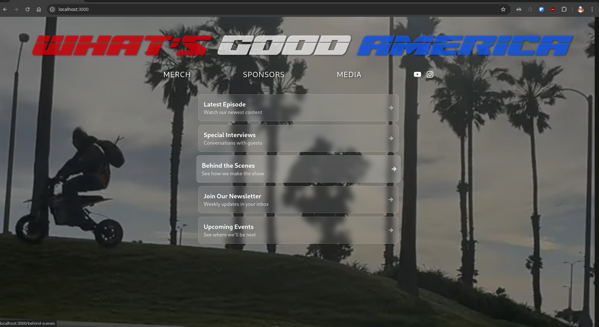

Extending site functionality
Posted on: 2025-03-25
20:37:17
I have built out the storefront to include a linktree-style column of links that minimally obscure the video background. These links will be something tonka can control (about to set this up in the mill after I post this).
I will identify a valid schema to use for linktree stuff, jam it in a database, and make a mill panel for it to run in the eventual admin backend (hopefully run in electron shell natively for him).

Looking good so far…